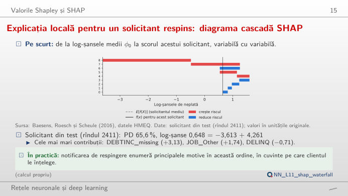
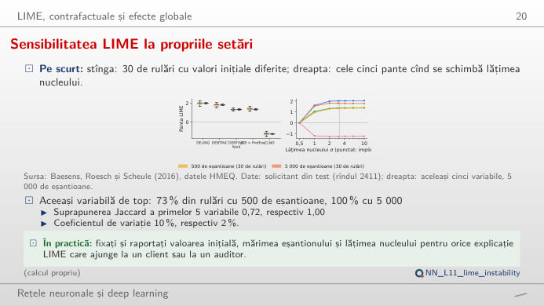
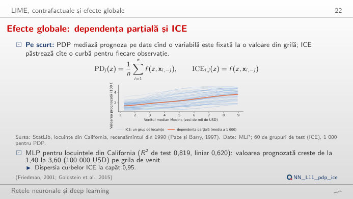
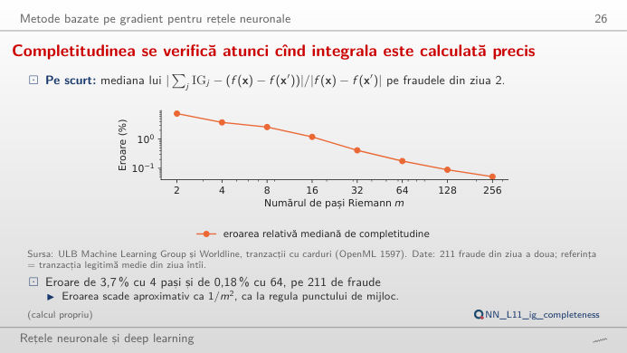
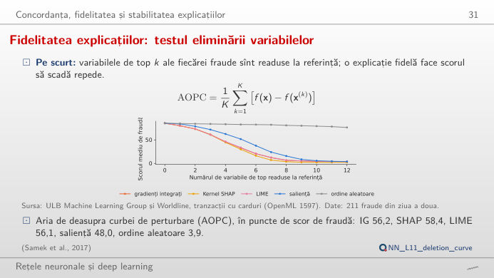
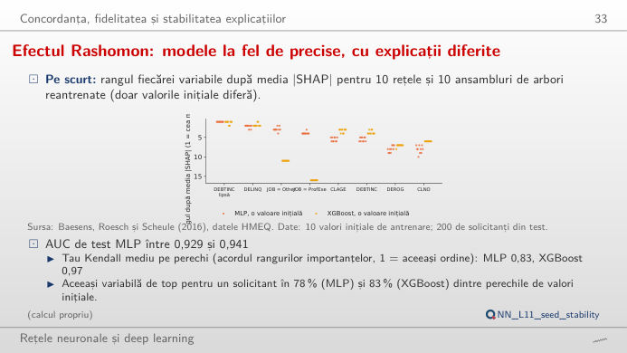

În stînga este slide-ul din curs, în dreapta aceeași figură, recalculată în browser din modelele cursului cînd modificați un control. Butonul ▶ modifică parametrul principal pas cu pas. Sub fiecare figură: o sinteză numerică, o întrebare pentru sală și Quantlet-ul cu codul figurii. Explicațiile provin din SHAP (explicații aditive Shapley), LIME (explicații locale interpretabile, independente de model), din curbele de dependență parțială și ICE (așteptarea condiționată individuală) și din IG (gradienți integrați), calculate pentru un perceptron multistrat (MLP), un ansamblu XGBoost (extreme gradient boosting, arbori amplificați prin gradient) și o regresie logistică.
Valorile Shapley și SHAP · LIME, explicații contrafactuale și efecte globale · Metode bazate pe gradient pentru rețele neuronale · Concordanța, fidelitatea și stabilitatea explicațiilor
Valorile Shapley și SHAP
Explicația locală pentru un solicitant respins: diagrama cascadă SHAP

Răspuns
Pentru MLP domină lipsa raportului datorie/venit (DEBTINC lipsă, +3,13 log-șanse), urmată de JOB = Other (+1,74); DELINQ = 0 (nicio linie de credit cu restanțe) reduce riscul (−0,71). Barele se adună exact: −3,613 (solicitantul mediu, PD 2,6%) + 4,261 = 0,648 log-șanse, adică o PD de 65,6%. Schimbați modelul: cele trei modele sînt de acord că lipsa DEBTINC este cel mai puternic semnal (în date, 62,0% dintre solicitanții fără DEBTINC nu rambursează, față de 8,6% dintre ceilalți), dar împart diferit restul scorului. Mutați cursorul spre solicitanții cei mai siguri: acolo, majoritatea barelor sînt albastre.
LIME, explicații contrafactuale și efecte globale
LIME depinde de propriile setări

Codul acestei figuri: NN_L11_lime_instability · deschide în Colab
Răspuns
Nu: cu 500 de eșantioane, variabila de pe primul loc coincide cu cea din rularea de referință în 73% dintre cele 30 de rulări (suprapunerea Jaccard a primelor cinci variabile 0,72); cu 5.000 de eșantioane în 100% (suprapunere 1,00), iar coeficientul de variație al pantelor primelor cinci variabile scade de la 10% la 2%. Contează și lățimea nucleului σ: panta DELINQ, variabila de top pentru LIME, trece de la −2,04 la aproape 0 pe cele șapte lățimi încercate (implicit 0,75·√18 = 3,18). Raportați valoarea inițială, mărimea eșantionului și lățimea nucleului pentru fiecare explicație LIME.
Efecte globale: dependența parțială și ICE

Răspuns
Nu. PDP (graficul dependenței parțiale) este o medie; curbele ICE arată cîte un grup de locuințe, cu toate celelalte variabile fixate. La capătul de sus al grilei de venit, curbele se împrăștie cu 0,95 (abaterea standard, 100.000 USD): rețeaua a învățat interacțiuni, de exemplu cu localizarea. Centrați curbele (c-ICE) pentru a compara numai formele lor. Pentru latitudine, curbele scad de la sud spre nord la majoritatea grupurilor, dar nu cu aceeași valoare.
Metode bazate pe gradient pentru rețele neuronale
Completitudinea se verifică atunci cînd integrala este calculată precis

Răspuns
IG este o integrală a gradientului pe drumul drept de la referința x′ (tranzacția legitimă medie din ziua 1) la frauda x, calculată cu o sumă Riemann cu punctul de mijloc, cu m pași. Cu puțini pași, suma aproximează slab integrala: pe cele 211 fraude din ziua 2, eroarea relativă mediană este 7,5% cu 2 pași, 3,7% cu 4 și 0,18% cu 64; scade aproximativ ca 1/m², ca pentru regula punctului de mijloc. Ordinea variabilelor se stabilizează mult înaintea sumei.
Concordanța, fidelitatea și stabilitatea explicațiilor
Fidelitatea explicațiilor: testul eliminării variabilelor

Răspuns
Gradienții integrați, Kernel SHAP și LIME duc scorul mediu de fraudă de la 85,4% la aproximativ 61% după trei variabile (IG 61,3%, SHAP 61,1%, LIME 61,2%); saliența (valoarea absolută a gradientului) doar la 71,9%, iar o ordine aleatoare la 83,9%. AOPC (aria de deasupra curbei de perturbare, scăderea medie pentru k = 1–12) este 56,2, 58,4 și 56,1 puncte pentru IG, SHAP și LIME, 48,0 pentru saliență și 3,9 pentru ordinea aleatoare. Mutați cursorul fraudei: pentru fraude individuale, curbele se pot intersecta.
Efectul Rashomon: modele la fel de precise, cu explicații diferite

Răspuns
Nu întru totul: ordinea importanțelor globale concordă cu un tau Kendall mediu pe perechi de 0,83 pentru rețele și 0,97 pentru XGBoost, iar variabila de top a unui solicitant este aceeași în 78% (MLP) și 83% (XGBoost) dintre perechile de valori inițiale. Acesta este efectul Rashomon: mai multe modele la fel de bune explică datele în moduri diferite. O explicație trimisă unui client trebuie verificată pe mai multe valori inițiale sau produsă de un model cu explicații stabile.
Credit: datele HMEQ (credite garantate cu locuința) ale lui Baesens, Roesch și Scheule (2016), 5.960 de credite, 400 de solicitanți din test explicați, 100 de solicitanți din antrenare ca referință. Fraudă: ULB (Université Libre de Bruxelles) Machine Learning Group și Worldline, tranzacții cu carduri (OpenML 1597); rețea antrenată pe ziua 1, 211 fraude din ziua 2 explicate. Valoarea locuințelor: StatLib, California housing, recensămîntul din 1990 (Pace și Barry, 1997). Modele, SHAP, LIME și atribuiri: analysis_L11.py, valoarea inițială 20261108.